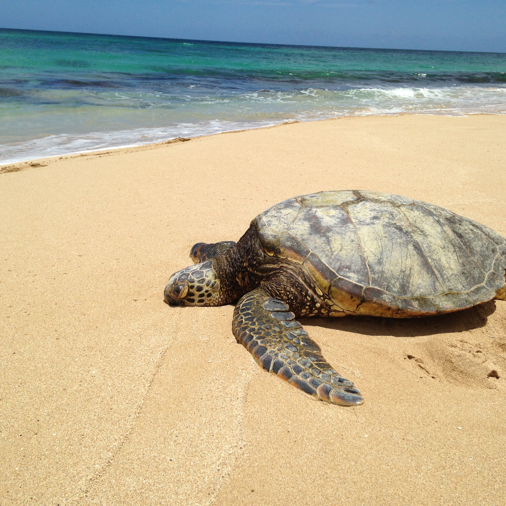
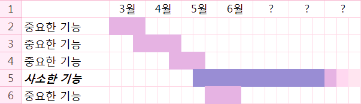
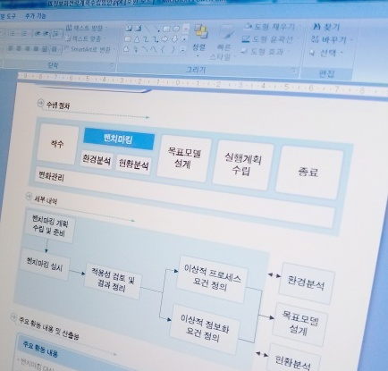

프로젝트
-
프로젝트의 쓴맛
SI 업계에 있은지 10여년을 훌쩍 넘겼지만 여전히 매 프로젝트마다 쉽게 넘어가는 프로젝트는 없는 것 같다. 프로젝트마다 난이도가 다르고 수행 여건이 다르기에 각각의 특성은 매번 달라지고 그 때마다 새로운 경험을 하면서 뭔가를 배우게 된다. 왜 경험이 누적되는 데 반해 "프로젝트의 쓴맛"은 여전할까? 달콤상콤한 프로젝트란 나하고 거리가 먼 걸까?
 -
지난 프로젝트의 교훈
최근 참여한 프로젝트가 얼마 전에 끝났다. 매번 프로젝트가 끝날 때마다 다음 프로젝트는 더 잘하자고 생각하면서도 지난 프로젝트의 교훈을 잘 활용하지 못하는 것 같다. 이번에는 오랜만에 한번 정리해보기로 했다.
-
개발자에게 야근이란?
15년 정도 프로그램 개발 일을 하다 보니 참으로 많은 날을 야근하고 철야도 하고 주말 근무도 했다. 개발자에게 야근과 철야란 어떤 것인지 하나씩 꺼내어 생각해봤다. 힘들게 일한다고 살이 빠지진 않는다 1주일에 몇 번을 철야를 하고 주말에도 나가 힘들게 일했는데 흔히 살이 빠질 걸로 생각하지만 전혀 그렇지 않다. 야근의 부수적인 효과로 다이어트는 기대할 수 없는 것이다.
-
속담으로 풀어보는 프로젝트 관리
매번 프로젝트를 하다보면 새로운 도전과 문제의 연속을 겪게 되고 이 과정에서 종종 생각나는 속담들이 있다. 선조들의 지혜가 어떻게 프로젝트 관리에 적용되는지 생각해보았다. 배보다 배꼽이 더 크다 프로젝트의 과업 범위를 잘못 파악하고 있다보면 배보다 배꼽이 더 큰 경우가 생긴다. 원래는 작은 일이라고 생각했던 것이지만 기술적 난이도, 요구 사항, 소요 시간 등을 미리 파악하지 못해 결국 다른 모든 일보다 중요하고 큰 일이 돼 버리곤 한다.
 -
짝 프로그래밍의 힘
우선 짝 프로그래밍(Pair programming)을 아는가? 개발자 두 명이 단위 작업 하나를 수행하는 개발 방식을 말한다. 이제 한숨 돌리게 돼서 얘기하지만 심각한 위기를 맞은 프로젝트가 있었고 난 그 중심에서 방향을 잃고 있었다. 그 때를 생각하면 내가 무능했었나 자책도 하지만 어쨌든 해결이 됐고 그대로 흘릴 수 없는 중대한 경험을 했다. 단편적이지만 최고의 효과를 본 해법이 있었으니 바로 짝 프로그래밍이었다. 이 글은 그 얘기를 하고자 한다.

-
제안서 작업도 프로젝트다
정부 기관이나 공공 기관의 정보 시스템 관련 사업(프로젝트)을 수주하기 위해서는 아주 포멀한(formal) 제안서를 작성해야 한다. 사업을 수주하고 싶은 업체는 없는 살림에 인력을 쪼개 제안팀을 꾸리고 짧게는 며칠에서 길게는 몇 주 동안 제안 작업을 하게 되는데 프로젝트의 목표를 이해하고 업체 입장에서 최대한 돋보이는 내용으로 제안서를 작성한다.
 -
기본
우리는 "기본"이라는 말을 참 많이 사용한다. 한자로 基本. 사전적인 의미는 "사물이나 현상, 이론, 시설 따위의 기초와 근본."이라고 한다. "이 제품은 적외선 촬영 기능이 기본이지." "영어의 기본은 단어 학습이야." "오늘은 기본 동작을 배웠다." "기본"은 이런 예처럼 형식상 준비가 되었음, 갖춤을 의미하는 객관적인 의미를 나타내기 위해 사용하는 경우도 많지만 "기본이 됐다", "기본이 안됐다"처럼 말하는 사람이 주관적으로 원하는 바에 대한 충족의 정도를 나타내는 의미로 사용하는 경우가 참 많다.